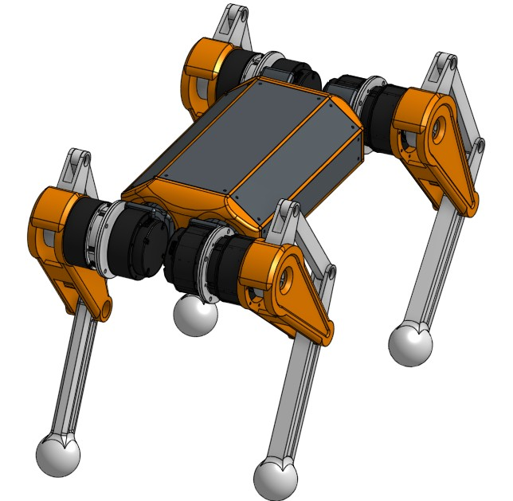

← All Projects
UMass Robotics — RoboDog
Robotics · ElectricalServing as Electrical Lead and Project Manager for UMass Robotics' effort to build a custom quadruped robot for future research use within the university.
Responsible for the full electrical architecture of the robot — motor driver selection and integration, power distribution, communication bus design, and sensor wiring. Managing a team of engineers working across mechanical and electrical disciplines.
The robot is designed as a research platform, with the flexibility to support a wide range of locomotion and manipulation experiments as the project evolves.